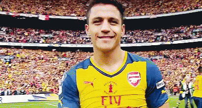

Casos de Deportes
Alexis Sanchez
Cuando Alexis cumplió 8 años el hermano de su padre biológico le pidió a Martina llevárselo a vivir con él y su mujer a Rancagua para participar en la escuela de fútbol del Universidad Católica.
El joven jugador no se adaptó y a los pocos meses regresó a su hogar, tras tratar de ganar algún dinero limpiando coches y sin medios para estudiar vio en el fútbol la llave para salir de la pobreza.
En 2003 el Cobreloa se lo llevó a su escuela de fútbol de Santiago de Chile y el resto
es una historia ya por todos conocida.

Messi
Leo Messi: Lionel Andrés Messi Cuccittini, conocido como Leo Messi, es un futbolista argentino que juega como delantero o centrocampista. Jugador histórico del Fútbol Club Barcelona, al que estuvo ligado veinte años. tuvo problemas cuando era niño y despues de que en argentina no tuviera oportunidad llego al barcelona donde lo gano todo.
Michael Jordan:
Michael Jeffrey Jordan es un exjugador de baloncesto estadounidense. Con 1,98 metros de altura, jugaba en la posición de escolta. Es considerado por la mayoría de aficionados y especialistas como el mejor jugador de baloncesto de todos los tiempos.